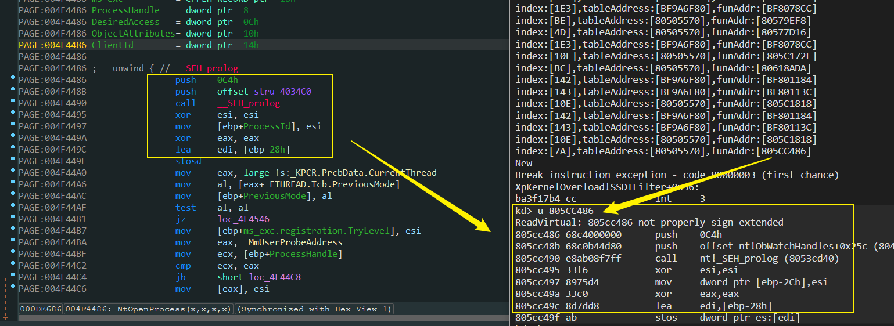
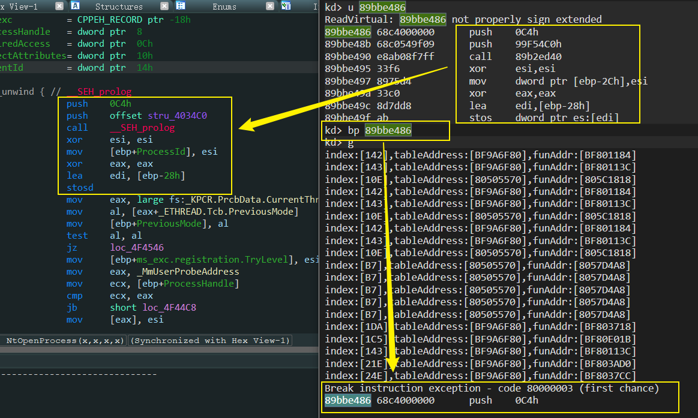
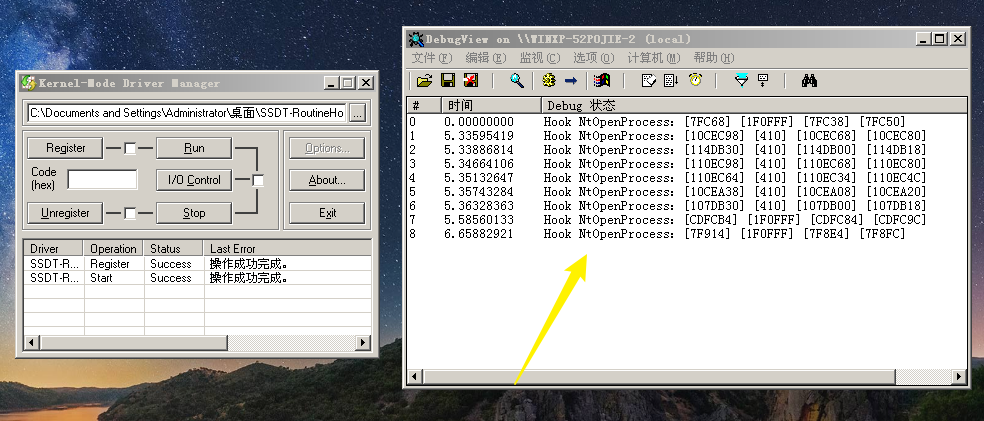
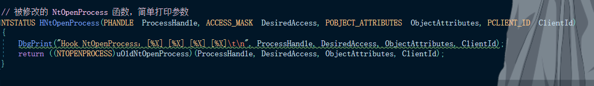
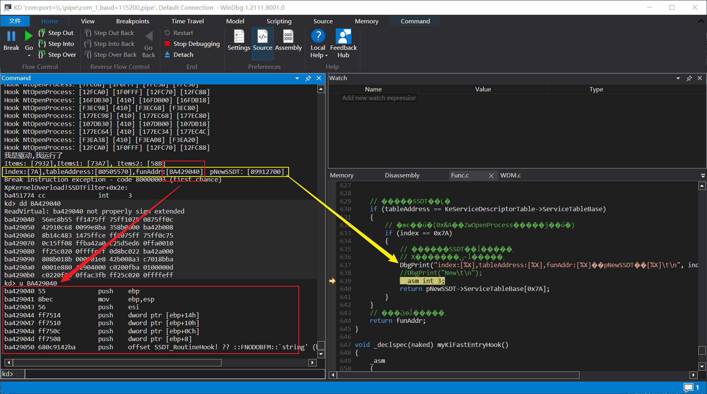
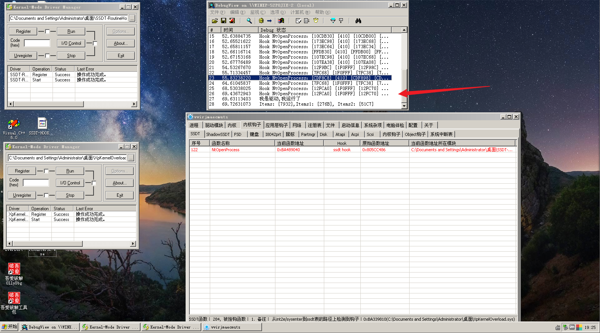
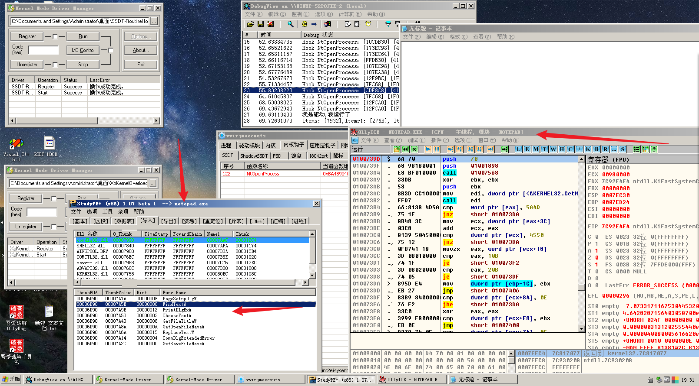

# 重载内核解决什么问题？
内核中的很多函数被层层 HOOK，重载一份内核可以绕过这些 HOOK。
# 重载内核的步骤
<1> 申请内存，按内存对齐展开
<2> 根据重定位表修复全局变量
<3> 修复 IAT 表
这些都是 PE 的知识，这样内核文件在高 2G 内存中就又加载了一份。
但如何让操作系统走我们新内核文件的函数呢？
<1> 找到新加载的内核的系统服务表，并且填充
<2> Hook KiFastCallEntry 让系统调用走我们的系统服务表。
KiFastCallEntry 中有一行汇编指令是查找系统服务表。
# 重载内核的弊端
<1> 改动太大，即使抹去 PE 指纹也无法完全隐形。
<2> 最好的办法不是重载内核，而是需要什么函数自己来实现。
# 代码实现重载 xp 的内核。
使用内核函数操作文件、内存。
写的时候网上冲浪发现了一篇博客：https://bbs.pediy.com/thread-253425.htm，这个博主说了一些关于重定位的事情：
关键难点是重定位，由于我们自己重载的新内核没有执行 DriverEntry, 数据都没有初始化，所以在重定位的时候凡是指向数据的地址都要重定位到老内核，是代码的地址就正常重定位到新内核。
重载后可能会不稳定，导致蓝屏。
# 第一步：内核文件的全路径
遍历内核模块，找到内核文件。
这里我遇到了一个问题：
通过内核模块遍历获取内核文件的全路径，发现前面没根路径，于是就把根路径添加上了，一直调用 ZwCreateFile 失败。
先贴在这里了。
信息如下:
我是驱动，我运行了 | |
\??\C:\WINDOWS\system32\ntkrnlpa.exe | |
打开文件失败 | |
0 | |
C0000033 | |
0 |
一直报 C0000033 STATUS_OBJECT_NAME_INVALID 错误，好像是路径有问题？
解决不了就直接把路径写死了，不这样获取了。
# 第二步： 修复重定位表和 IAT
下面就要修复重定位表和 IAT 了。
修复重定位表这里我也学着看雪的那个博主的判断一下要修复的地址是否在可执行的节中，如果不在则不管这个地址了，让其仍然去老内核中。
BOOLEAN AddressIsExecuteable(IN ULONG pAddress, IN PIMAGE_SECTION_HEADER pSectionHeader, IN ULONG ulSectionNum) | |
{ | |
BOOLEAN bFlag = FALSE; | |
// 循环判断数据在哪个节中 | |
for (int t = 0; t < ulSectionNum; t++) | |
{ | |
// 节的起始和结束位置 | |
ULONG Begin = pSectionHeader[t].VirtualAddress; | |
ULONG End = pSectionHeader[t].VirtualAddress + pSectionHeader[t].Misc.VirtualSize; | |
//DbgPrint("pSectionHeader:[%X]\t\n", pSectionHeader); | |
//DbgPrint("Begin:[%X]\t\n", Begin); | |
//DbgPrint("End:[%X]\t\n", End); | |
//DbgPrint("pSectionHeader[t].Characteristics:[%X]\t\n", pSectionHeader[t].Characteristics); | |
//__asm int 3; | |
// 判断 | |
if (pAddress >= Begin && pAddress <= End) | |
{ | |
// 只修复 .text 节区 | |
if (strcmp(pSectionHeader[t].Name, ".text") == 0) | |
{ | |
//DbgPrint("pSectionHeader[t].Name:[%s]\t\n", pSectionHeader[t].Name); | |
//__asm int 3; | |
return TRUE; | |
} | |
// bFlag = ((pSectionHeader[t].Characteristics & 0x20000020) == 0x20000020) ? TRUE : FALSE; | |
return bFlag; | |
} | |
} | |
//DbgPrint("pAddress:[%X] not in the section \t\n", pAddress); | |
return bFlag; | |
} |
后来实验的时候发现这样判断节区属性来进行修复也是不行的，内核文件有很多节区，并且有太多没有被初始化的数据。
即使重定位完成了，但是重定位后的地址也是没有数据的，因为我们的内核文件并没有执行初始化，所以我就把新内核中需要重定位的数据，指向了老内核中，于是就这样变相的完成了重定位。修改后的代码在 Github 中。
# 修复重定位表
这里我碰到了一个坑，我在用
LDR_DATA_TABLE_ENTRY结构体中的遍历内核文件时，也顺便把其中记录的内核加载基址，也获取了一下，我以为这个就是内核文件的 ImageBase，可是并不是，内核在启动的时候加载基址也是变化的。内核文件的 ImageBase 也是 0x400000。重定位时需要注意！
NTSTATUS RepairRelocation(IN OUT PVOID pKernelImageBuffer, IN ULONG KernelBase) | |
{ | |
typedef struct _TYPE { | |
USHORT Offset : 12; | |
USHORT Type : 4; | |
}TypeOffset, * PTypeOffset; | |
NTSTATUS status = STATUS_SUCCESS; | |
// PE 头 查找重定位表 | |
PIMAGE_DOS_HEADER pDosHeader = (PIMAGE_DOS_HEADER)pKernelImageBuffer; | |
PIMAGE_NT_HEADERS pNtHeader = (PIMAGE_NT_HEADERS)(pDosHeader->e_lfanew + (ULONG)pKernelImageBuffer); | |
PIMAGE_FILE_HEADER pFileHeader = (PIMAGE_FILE_HEADER)((ULONG)pNtHeader + 4); | |
PIMAGE_OPTIONAL_HEADER pOptionHeader = (PIMAGE_OPTIONAL_HEADER)((ULONG)pFileHeader + (ULONG)IMAGE_SIZEOF_FILE_HEADER); | |
PIMAGE_SECTION_HEADER pSectionHeader = IMAGE_FIRST_SECTION(pNtHeader); | |
PIMAGE_BASE_RELOCATION pReloc = pOptionHeader->DataDirectory[IMAGE_DIRECTORY_ENTRY_BASERELOC].VirtualAddress + (ULONG)pDosHeader; | |
// ULONG Items = 0, Items1 = 0, Items2 = 0; | |
// 遍历重定位表，并对目标代码进行重定位 | |
while (pReloc->SizeOfBlock && pReloc->VirtualAddress) | |
{ | |
// 重定位项数目 | |
ULONG ulCount = (pReloc->SizeOfBlock - 8) / 2; | |
// 需要定位数据的起始 RVA | |
ULONG ulRva = pReloc->VirtualAddress; | |
// 解析需要重定位的项数 | |
PTypeOffset pRelocationArray = (PTypeOffset)(pReloc + 1); | |
for (int i = 0; i < ulCount; i++) | |
{ | |
if (pRelocationArray->Type == 3) | |
{ | |
// 需要重定位的数据 RVA = VirtualAddress + TypeOffset 低 12 位 | |
// 获取要修改的地址的 RVA | |
ULONG RepairAddrOffset = (ulRva + pRelocationArray->Offset); | |
PULONG pRepairAddr = (PULONG)(RepairAddrOffset + (ULONG)pKernelImageBuffer); | |
// 判断要修复的地址是否在 | |
if (AddressIsExecuteable(RepairAddrOffset, pSectionHeader, pFileHeader->NumberOfSections)) | |
{ | |
// 修正需要重定位项的在新内核中的值 | |
*pRepairAddr += (ULONG)pKernelImageBuffer - pOptionHeader->ImageBase; | |
//Items++; | |
//Items1++; | |
} | |
else | |
{ | |
// 不需要修复的值。 什么都不做就行。 | |
//DbgPrint("FixAddress to Old Kernel:[%X]\t\n", *pRepairAddr); | |
*pRepairAddr += KernelBase - pOptionHeader->ImageBase; | |
//Items++; | |
//Items2++; | |
} | |
} | |
pRelocationArray++; | |
} | |
pReloc = (PIMAGE_BASE_RELOCATION)((ULONG)pReloc + pReloc->SizeOfBlock); | |
} | |
//DbgPrint("Items: [%X],Items1: [%X], Items2: [%X]\t\n", Items, Items1, Items2); | |
return status; | |
} |
# 修复 IAT
在内核中获取模块基址，还是通过 LDR_DATA_TABLE_ENTRY 结构体遍历获取，这里我直接搬运了一位大佬的代码，设计的太好了。
typedef struct | |
{ | |
union OD_OR_NAME | |
{ | |
CHAR* Name; | |
USHORT Od; | |
}; | |
}EXP_FUN_NAME; | |
//API 导出模式 | |
typedef enum | |
{ | |
NameFlag = 0x1, | |
OrderFlag = 0x2, | |
}EXP_FUN_MODE; |
NTSTATUS GetFunAddrOfModule(IN PVOID pModule, IN EXP_FUN_NAME unFuntionName, IN EXP_FUN_MODE eMode, OUT PULONG FuncAddress) | |
{ | |
//__asm int 3; | |
NTSTATUS status = STATUS_SUCCESS; | |
// PE 查找导出表 | |
PIMAGE_DOS_HEADER pDosHeader = (PIMAGE_DOS_HEADER)pModule; | |
//DbgPrint("pDosHeader:%X\t\n", pDosHeader); | |
PIMAGE_NT_HEADERS pNtHeader = (PIMAGE_NT_HEADERS)(pDosHeader->e_lfanew + (ULONG)pModule); | |
//DbgPrint("pNtHeader:%X\t\n", pNtHeader); | |
PIMAGE_FILE_HEADER pFileHeader = (PIMAGE_FILE_HEADER)((ULONG)pNtHeader + 4); | |
//DbgPrint("pFileHeader:%X\t\n", pFileHeader); | |
PIMAGE_OPTIONAL_HEADER pOptionHeader = (PIMAGE_OPTIONAL_HEADER)((ULONG)pFileHeader + (ULONG)IMAGE_SIZEOF_FILE_HEADER); | |
//DbgPrint("pOptionHeader:%X\t\n", pOptionHeader); | |
PIMAGE_DATA_DIRECTORY pDirectory = (PIMAGE_DATA_DIRECTORY)pOptionHeader->DataDirectory; | |
//DbgPrint("pDirectory:%X\t\n", pDirectory); | |
PIMAGE_EXPORT_DIRECTORY pExportTabel = (PIMAGE_EXPORT_DIRECTORY)((ULONG)pModule + pOptionHeader->DataDirectory[IMAGE_DIRECTORY_ENTRY_EXPORT].VirtualAddress); | |
//DbgPrint("pExportTabel:%X\t\n", pExportTabel); | |
//__asm int 3; | |
PULONG dwNameTable = (PULONG)((ULONG)pModule + (pExportTabel->AddressOfNames)); | |
PUSHORT wOrdinalsTable = (PUSHORT)((ULONG)pModule + (pExportTabel->AddressOfNameOrdinals)); | |
PULONG dwAddressTable = (PULONG)((ULONG)pModule + (pExportTabel->AddressOfFunctions)); | |
int i = 0; | |
if (eMode == NameFlag)// 按名称导出 | |
{ | |
for (i = 0; i < (int)(pExportTabel->NumberOfNames); ++i) | |
{ | |
CHAR* cImportName = (CHAR*)((ULONG)pModule + dwNameTable[i]); | |
if (strcmp(cImportName, unFuntionName.Name) == 0) | |
{ | |
break; | |
} | |
} | |
*FuncAddress = ((ULONG)pModule + dwAddressTable[wOrdinalsTable[i]]); | |
} | |
else// 按序号导出 | |
{ | |
*FuncAddress = (ULONG)pModule + dwAddressTable[(unFuntionName.Od) - (pExportTabel->Base)]; | |
} | |
if (*FuncAddress != 0) | |
{ | |
return STATUS_SUCCESS; | |
} | |
else | |
{ | |
return STATUS_UNSUCCESSFUL; | |
} | |
} |
NTSTATUS RepairIAT(IN PDRIVER_OBJECT pDriver, IN OUT PVOID pKernelImageBuffer) | |
{ | |
NTSTATUS status = STATUS_SUCCESS; | |
// PE 头 定位大导入表 IAT 表 | |
PIMAGE_DOS_HEADER pDosHeader = (PIMAGE_DOS_HEADER)pKernelImageBuffer; | |
PIMAGE_NT_HEADERS pNtHeader = (PIMAGE_NT_HEADERS)(pDosHeader->e_lfanew + (ULONG)pDosHeader); | |
PIMAGE_OPTIONAL_HEADER pOptionHeader = &pNtHeader->OptionalHeader; | |
PIMAGE_IMPORT_DESCRIPTOR pImportTable = (PIMAGE_IMPORT_DESCRIPTOR)((ULONG)pDosHeader + pOptionHeader->DataDirectory[1].VirtualAddress); | |
// 遍历 INT 表 | |
while (pImportTable->OriginalFirstThunk || pImportTable->FirstThunk) | |
{ | |
// 在里面定义，变量的值每次都会重新设置为空 | |
// 模块基址 | |
PVOID pModuleBase = NULL; | |
// 模块名字 | |
CHAR szName[0x50] = { 0 }; | |
ANSI_STRING asName = { 0 }; | |
UNICODE_STRING usName = { 0 }; | |
// 获取模块名，由模块名字获取模块基址 | |
PCHAR MdName = (PCHAR)(pImportTable->Name + (ULONG)pDosHeader); | |
memcpy(szName, MdName, strlen(MdName)); | |
RtlInitAnsiString(&asName, szName); | |
status = RtlAnsiStringToUnicodeString(&usName, &asName, TRUE); | |
if (!NT_SUCCESS(status)) | |
{ | |
DbgPrint("RtlAnsiStringToUnicodeString failed!\t\n"); | |
return status; | |
} | |
//DbgPrint("usName:%ws\t\n", usName.Buffer); | |
// 获取模块基址 | |
status = GetModuleBase(pDriver, &usName, &pModuleBase); | |
if (!NT_SUCCESS(status)) | |
{ | |
RtlFreeUnicodeString(&usName); | |
DbgPrint("GetModuleBase failed!\t\n"); | |
return status; | |
} | |
if (NULL == pModuleBase) | |
{ | |
RtlFreeUnicodeString(&usName); | |
DbgPrint("ModuleBase = 0 !\t\n"); | |
return STATUS_UNSUCCESSFUL; | |
} | |
// 修复 IAT 表 | |
PIMAGE_THUNK_DATA32 pThunkData = (PIMAGE_THUNK_DATA32)((ULONG)pKernelImageBuffer + pImportTable->FirstThunk); | |
while (*((PULONG)pThunkData) != 0) | |
{ | |
EXP_FUN_NAME emFunName = { 0 }; | |
ULONG dwProcAddress = 0; | |
//__asm int 3; | |
// IMAGE_THUNK_DATA32 是一个 4 字节数据 | |
// 如果最高位是 1，那么除去最高位就是导出序号 | |
// 如果最高位是 0，那么这个值是 RVA 指向 IMAGE_IMPORT_BY_NAME | |
if ((*((PULONG)pThunkData) & 0x80000000) == 0x80000000) | |
{ | |
emFunName.Od = (*((PULONG)pThunkData) & 0x7FFFFFFF); | |
status = GetFunAddrOfModule(pModuleBase, emFunName, OrderFlag, &dwProcAddress); | |
if (!NT_SUCCESS(status)) | |
{ | |
RtlFreeUnicodeString(&usName); | |
DbgPrint("1 GetFunAddrOfModule failed !\t\n"); | |
return STATUS_UNSUCCESSFUL; | |
} | |
//DbgPrint("1 dwProcAddress:%X\t\n", dwProcAddress); | |
*((PULONG)pThunkData) = dwProcAddress; | |
} | |
else | |
{ | |
PIMAGE_IMPORT_BY_NAME pIBN = (PIMAGE_IMPORT_BY_NAME)(*((PULONG)pThunkData) + (ULONG)pKernelImageBuffer); | |
// 按名字导入 | |
emFunName.Name = pIBN->Name; | |
status = GetFunAddrOfModule(pModuleBase, emFunName, NameFlag, &dwProcAddress); | |
if (!NT_SUCCESS(status)) | |
{ | |
RtlFreeUnicodeString(&usName); | |
DbgPrint("2 GetFunAddrOfModule failed !\t\n"); | |
return STATUS_UNSUCCESSFUL; | |
} | |
//DbgPrint("2 dwProcAddress:%X\t\n", dwProcAddress); | |
*((PULONG)pThunkData) = dwProcAddress; | |
} | |
pThunkData++; | |
} | |
pImportTable = (PIMAGE_IMPORT_DESCRIPTOR)((ULONG)pImportTable + sizeof(IMAGE_IMPORT_DESCRIPTOR)); | |
} | |
return status; | |
} |
# 第三步：让操作系统走我们新内核文件的函数
初始化新加载的内核的系统服务表
PKSYSTEM_SERVICE_TABLE InitNewSSDT(IN PVOID pKernelImageBuffer, IN ULONG uKernelOldBase) | |
{ | |
// 新内核地址 - 老内核地址，得到相对偏移 | |
ULONG uNewKernelInc = (ULONG)pKernelImageBuffer - uKernelOldBase; | |
//DbgPrint("KeServiceDescriptorTable: [%X]\r\n", KeServiceDescriptorTable); | |
//DbgPrint("pKernelImageBuffer: [%X]\r\n", pKernelImageBuffer); | |
//DbgPrint("uKernelOldBase: [%X]\r\n", uKernelOldBase); | |
//DbgPrint("uNewKernelInc: [%X]\r\n", uNewKernelInc); | |
// __asm int 3; | |
// 老内核的 ssdt 指针加上相对偏移，得到新内核的 ssdt 指针 | |
PKSYSTEM_SERVICE_TABLE pNewSSDT = (PKSYSTEM_SERVICE_TABLE)((ULONG)KeServiceDescriptorTable + uNewKernelInc); | |
if (!MmIsAddressValid(pNewSSDT)) | |
{ | |
DbgPrint("pNewSSDT is unaviable!\r\n"); | |
return NULL; | |
} | |
// 修正新的 SSDT 成员 | |
// 函数地址表 | |
pNewSSDT->ServiceTableBase = (PULONG)((ULONG)pKernelImageBuffer + (ULONG)(KeServiceDescriptorTable->ServiceTableBase) - uKernelOldBase ); | |
// 依次遍历修改 | |
for (ULONG uIndex = 0; uIndex < KeServiceDescriptorTable->NumberOfServices; uIndex++) | |
{ | |
// 函数地址再加上相对加载地址，得到新的的 ssdt 函数地址 | |
pNewSSDT->ServiceTableBase[uIndex] += uNewKernelInc; | |
} | |
if (!MmIsAddressValid(pNewSSDT->ServiceTableBase)) | |
{ | |
DbgPrint("pNewSSDT->ServiceTableBase: %X\r\n", pNewSSDT->ServiceTableBase); | |
return NULL; | |
} | |
// 函数数量 | |
pNewSSDT->NumberOfServices = KeServiceDescriptorTable->NumberOfServices; | |
// 计算相对函数参数地址表的偏移 | |
ULONG uOffset2 = (ULONG)KeServiceDescriptorTable->ParamTableBase - uKernelOldBase; | |
// 函数参数表 | |
pNewSSDT->ParamTableBase = (PULONG)((ULONG)pKernelImageBuffer + uOffset2); | |
//DbgPrint("pNewSSDT->ServiceTableBase: %X\r\n", pNewSSDT->ServiceTableBase); | |
//DbgPrint("pNewSSDT->NumberOfServices: %X\r\n", pNewSSDT->NumberOfServices); | |
//DbgPrint("pNewSSDT->ParamTableBase: %X\r\n", pNewSSDT->ParamTableBase); | |
//__asm int 3; | |
return pNewSSDT; | |
} |
Hook KiFastCallEntry 让系统调用走我们的系统服务表。
代码懒得放了，附上 Github 的链接： https://github.com/Or0kit/XpKernelOverload
# 验证是否成功
我在 SSDTFilter 函数中下了断点，并且验证了是否是 NtOpenProcess 函数

可以发现已经过滤了其他函数，我们只让这个函数走我们新内核中的代码。
一定得注意，不同的 Windows 它们 SSDT 中的函数的序号是不一样的！在 XP sp3 中 NtOpenProcess 是 0x7A。
然后我们在 Windbg 中找到我们内核的 NtOpenProcess 函数的地址，然后给这个函数下断点，以此验证是否执行到新内核中：

如图，已经断下来了！
接下来我们在验证一下是否能过所有 Hook:
我这里先加载了一个 Hook 了 NtOpenProcess 的驱动，其作用是一直打印 NtOpenProcess 的参数：

然后我们加载重载内核的代码（我在其中下了断点）,
先看一下 Hook NtOpenProcess 的代码：

这是断下来时打印的信息：

很明显当调用号是 0x7A 时 系统回去执行我们的 HOOK 函数。
但是我们重载了内核后，就可以过滤掉这些 HOOK 了！

接着验证一下 OpenProcess 函数的正常使用：

我用 OD 附加了记事本，用 StudyPE+ 载入了进程中的记事本文件，均正常！
至此内核重载完成。
# Reference
https://bbs.pediy.com/thread-253425.htm
https://blog.csdn.net/whatday/article/details/14160875